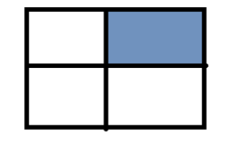
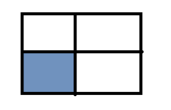
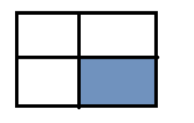

Задача 1
Знайти суми елементів у вказаній області

- 
- 
- 
Суму парних рядків
Суму непарних стовпців
У парних рядках – непарні стовпці, у непарних – парні.
Задача 2
Дано інформацію про прибуток К магазинів протягом тижня. Знайти :
- загальний прибуток кожного масиву за тиждень;
- загальний прибуток усіх магазинів по дням (загальний прибуток усіх магазинів за понеділок, за вівторок, і т.д.);
- загальний прибуток за робочі дні
- загальний прибуток за вихідні дні
- максимальний прибуток за середу
- сформувати загальний список (одновимірний масив) зі значенням, які що більші за 200
- відсортувати кожен тиждень за зростанням
- відсортувати тижні (рядки) за спаданням максимального елементи у цьому тижні (рядку), тобто при порівнянні рядків потрібно порівнювати максимальні елементи у кожному з цих рядків
- упорядкувати тижні (рядки) за спаданням суми елементів у рядку (тобто при порівнянні двох рядків треба знайти суму кожного з рядків і порівнювати ці суми, на основі цих сум буде зрозуміло, який з елементів повинен іти раніше).
Задача 3
Морський бій. Випадковим чином на двовимірному полі розміром 6*6 розташовується 5 кораблів. Користувач стріляє вказуючи координати. Гра продовжується поки не потоплено усі кораблі або у користувача не закінчаться снаряди.